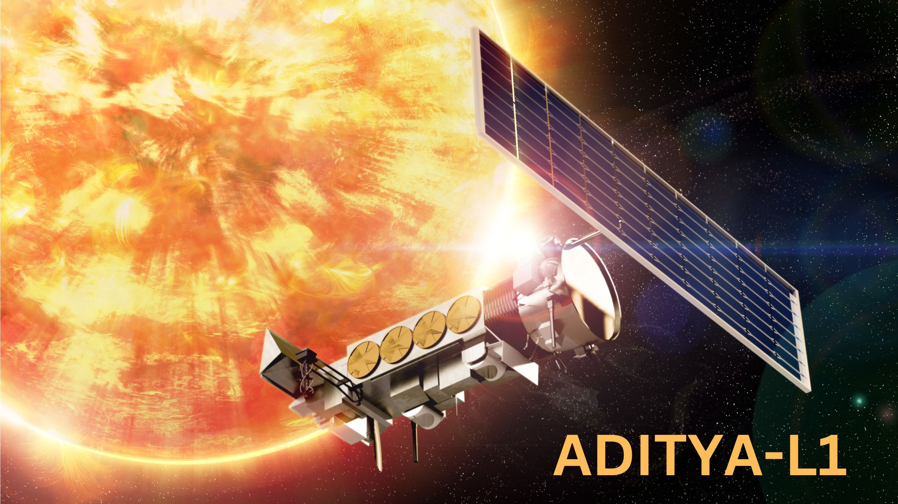
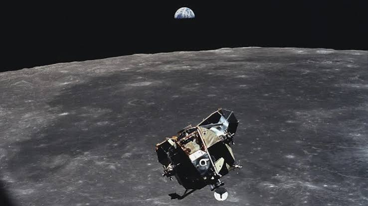
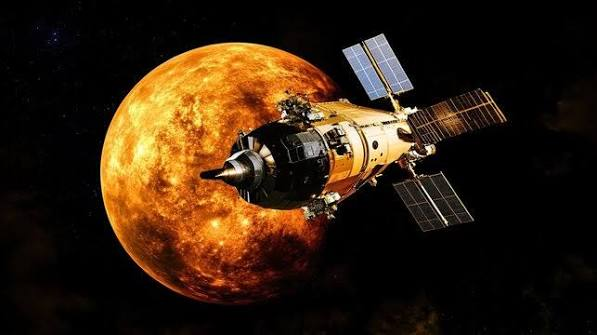
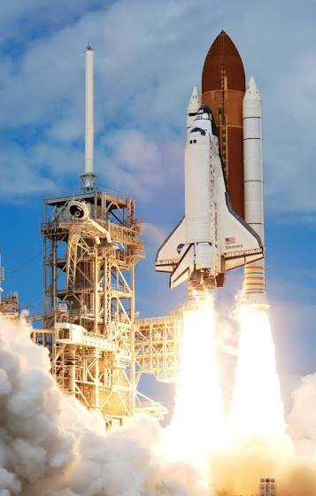

ASTROVERSE
Explore the Unknown
Explore the Unknown
BEYOND EARTH

India’s third lunar mission successfully landed near the Moon’s south polar region, demonstrating India’s ability to achieve a soft landing and explore the lunar surface.

India’s first space-based solar mission, Aditya-L1 studies the Sun and its atmosphere to better understand solar activity, solar storms, and their effects on space weather.

India’s first mission to the Moon, Chandrayaan-1 studied the lunar surface and helped provide important evidence of water molecules on the Moon.

India’s first interplanetary mission successfully reached Mars orbit and studied the Martian surface and atmosphere, making India the first Asian nation to reach Mars orbit on its first attempt.

Space exploration begins with curiosity. Every mission pushes humanity beyond what we thought was possible.
EXPLORE MISSIONS